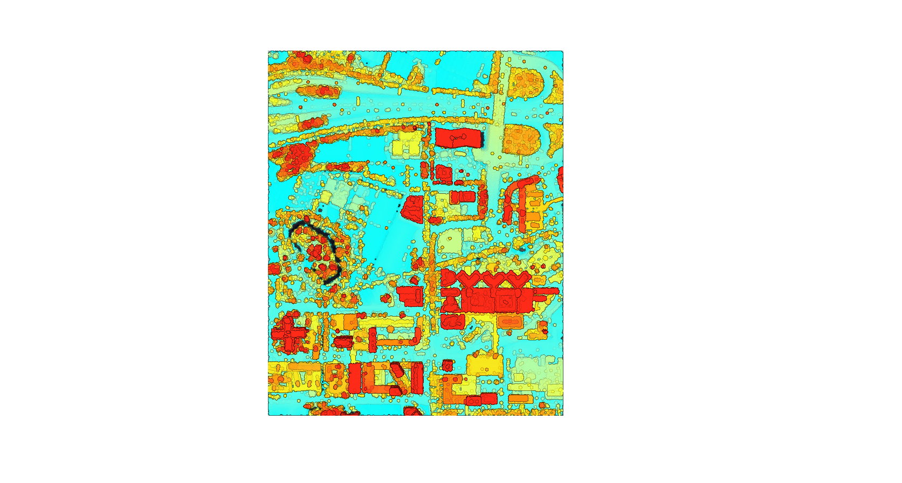

LiDAR
In this assignment, we explored LiDAR. That is Laser Imaging Detection and Ranging; it is a type of active sensor. An active sensor emits energy and calculates the time it takes for this same energy to come back, unlike a passive sensor which detects natural energy such as sun rays. By using active sensors, we are also able to get data regarding topology so we can render a 3D model of an area. Due to this 3D aspect, we are not only looking at the map in terms of X and Y, but also, Z. This first map represents the initial step in this assignment. Once the LiDAR data for that location had been added, this was the rendering on ArcGIS pro. Changes were made along the way, which I will discuss when they occur. The place I chose to explore LiDAR was Utrecht Science Park as it is quite a large area with changes in height. Because I am familiar with this area, I also thought it would be easier for me to understand the process and notice if anything was wrong.
This next screenshot represents the same map but from an angle showing coordinates X,Y and Z. In this map, we have added the LAS points which shows the Z coordinate system. The Science Park area has a total of 52,405,863 LAS points. In this image specifically, I am changing the symbology. This part I did not edit as it was already within a good range but, I could also have changed the range in elevation. The lowest elevation is -1.9m. As this is in the Netherlands, I wanted to keep it as such as it would not be surprising that some points are below sea level. This range is automatically given based on the range of LAS points height so, by changing this range, I would be getting rid of some points. As the map looked coherent and did not seem to have extrem outliers, I kept it as such. There are two main aspects that I did edit in symbology: colour symbology, symbole scale and, symbolization.
The symbol scale (seen at the top rigt corner under symbology) edits the size of these LAS points. This scale has a slider which I moved around quite a bit before deciding on this location. We can see the slider is almost at half. I found that this allowed for the points to do not be too big (and erase the shape of the buildings) but also, not too small as to see only tiny floating dots around.
Next, I edited the colour symbology. This is specifically the change in the colour of the LAS points based on elevation. I thought it would be most understandable to have the darkest colour at the bottom, and then move to brighter and different colours. I tried with a gradient however, as we can see in the map, we can see pink in the back showing a change in elevation. With a gradient, these changes would be too suttle to be see unless facing the specific building.
Symbolization refers to the way the data is categorized. As seen from what I have written, I refer to elevation as this si the category I chose. I was most interested in exploring the elevation and its difference in science park. There were other types such as classification which classified the LAS points based on what they represented (water, building, ground) rather than their height.
In this map, we can see the measuring of this same building. By using vertical measuring tool, I was able to get a straight line allowing the result to be as accurate as possible. In this case, this building is around 58m tall.
In this map, many steps have been taken. Firstly the hillshade was created. From there, a new map was created with all the already available parts. This map only has hillside, DSM and RGB. DSM was changed to brighter colours with a gradient starting with green for grass.
When we zoom in, we can see it looks much different. One of the most important steps in this map that makes it look so much different from the other prior is, the elevation surface. Prior, the elevation surface had been "WorldElevation3D/Terrain3D". In this new map, the elevation surface is the DSM. As we can see this causes a big difference.